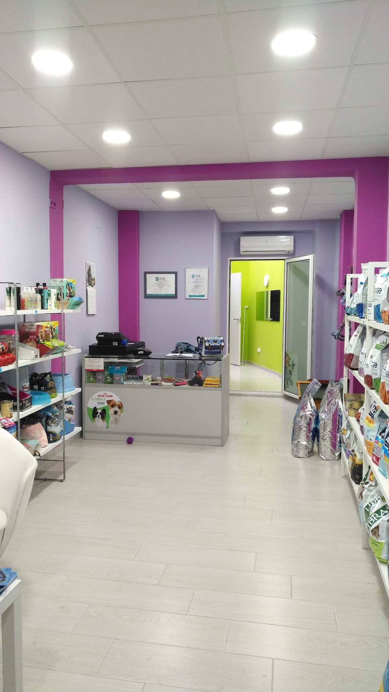
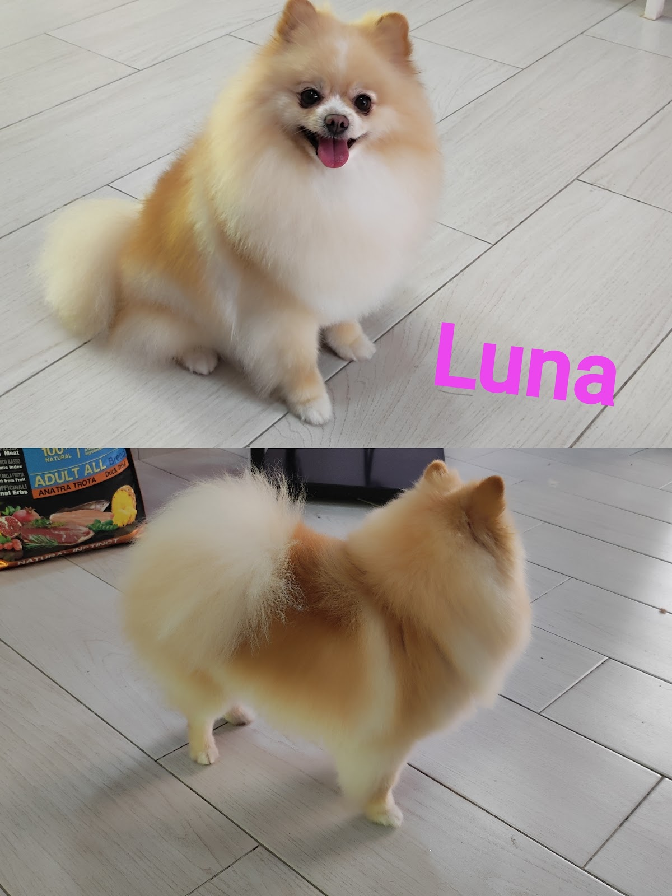
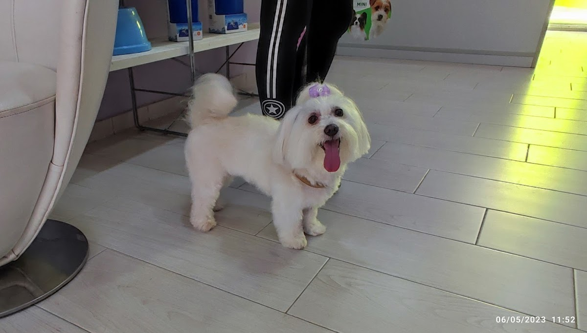
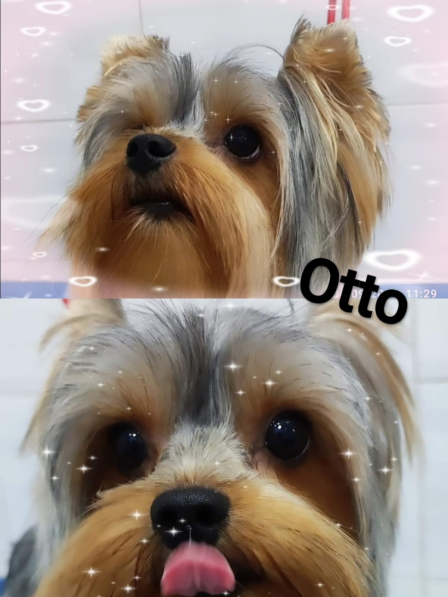
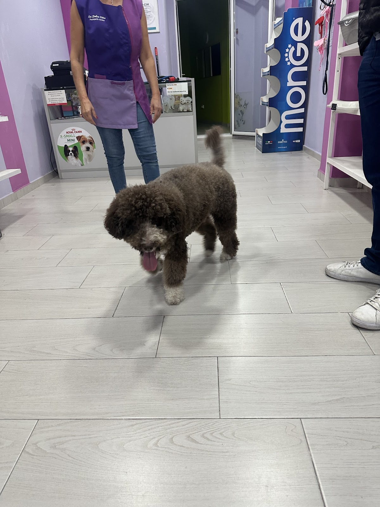
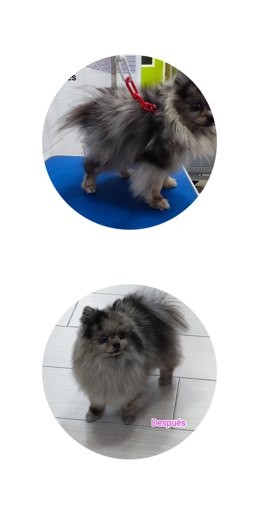
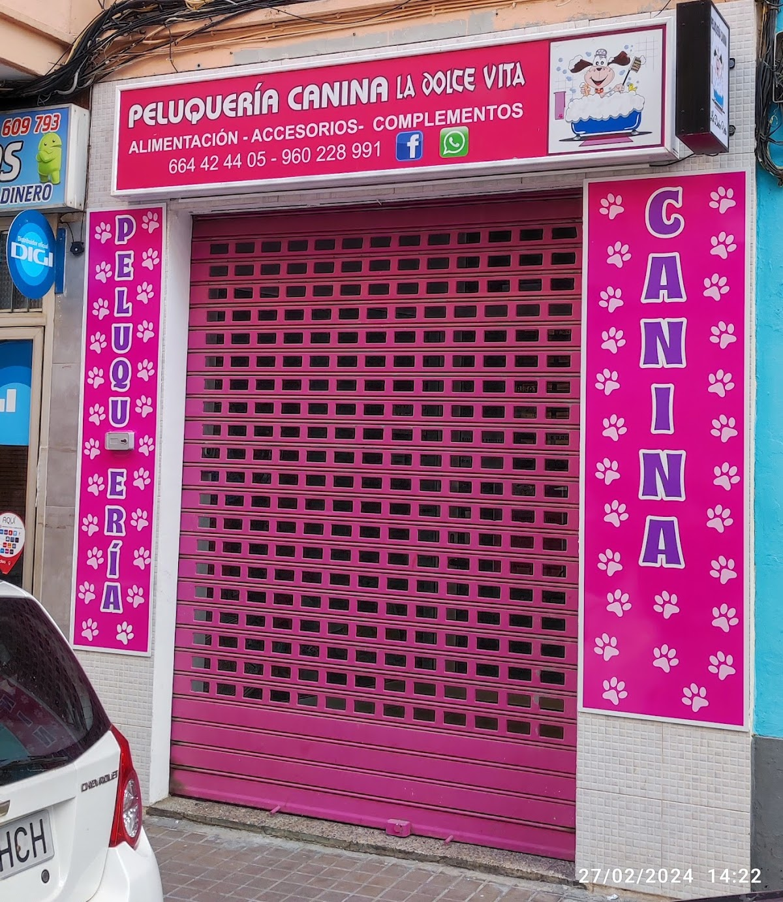
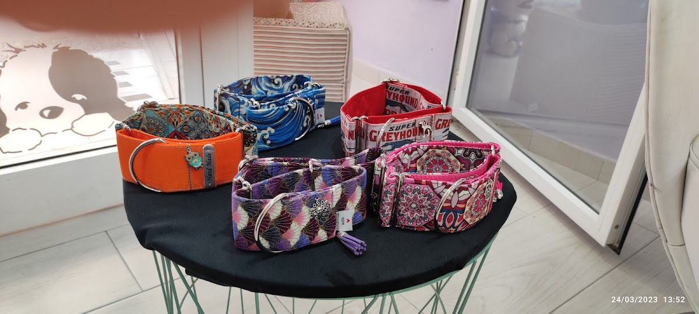

En La Dolce Vita, Daniela trata a cada perro con calma, paciencia y mucho cariño — incluso a los más nerviosos. Sales con tu mejor amigo guapo, relajado y feliz de haber venido.



En La Dolce Vita no hay prisas. Daniela se gana la confianza de cada perro desde el primer momento, trabajando con cuidado y paciencia para que la sesión sea un buen rato, no un mal trago.
¿Tu perro es mayor o muy nervioso? Aquí se le mima de más. Si te ayuda a que esté tranquilo, puedes quedarte a su lado mientras lo asea. La diferencia se ve después: vuelven más confiados cada vez.
— Daniela, La Dolce Vita
Cada perro es distinto. Cuéntale a Daniela cómo es el tuyo por WhatsApp y lo cuadramos a su carácter y a su pelo.
El corte perfecto para su raza y su carácter. Daniela le da forma con calma, sin estrés, y sales con tu perro impecable.
Baño completo, secado y cuidado al detalle. Limpio, suave y oliendo de maravilla — con todo el mimo, también si va mayor.
Perros miedosos o que lo pasan mal en la pelu: aquí van con paciencia y confianza. Puedes acompañarlo para que no se estrese.
Pequeños detalles que marcan la diferencia entre una peluquería más y un sitio al que tu perro quiere volver.
Se nota que Daniela ama a los animales. Trata a cada perro con el cuidado con el que cuidaría al suyo.
Nada de meterle prisa. La sesión va al ritmo de tu perro para que sea un buen rato, no un mal trago.
Si tu perro se pone nervioso, Daniela te deja estar a su lado mientras lo asea. Tranquilidad para los dos.
Perros con años, delicados o que necesitan paciencia extra. Aquí se les mima muchísimo, paso a paso.





Perros reales, recién salidos de su sesión en La Dolce Vita. 🐶
“Daniela, con su profesionalidad, atención y cariño en el trato, se gana la confianza desde el primer momento. Trabaja con mucho cuidado y amor.”
“Me encanta cómo trata a mi perrito Nino, él está ya mayor y lo cuida y mima muchísimo. Me deja estar con ella mientras lo asea para que no se estrese. La recomiendo 100%.”
“El corte perfecto. Daniela fue muy amable y profesional, se notaba que realmente aman a los animales. Mi perro, que normalmente es muy nervioso, se sintió a gusto.”
“Llevé a Toffee, un perrito rescatado que estoy acogiendo tras la DANA, y me lo lavó y cuidó sin cobrarme nada. Gracias Daniela por tu solidaridad.”
“Antes tenía mucho miedo y estaba muy nerviosa, pero gracias a la dedicación y el cariño con el que Daniela la trata, ahora va mucho más tranquila y confiada.”
“4,9★ sobre 48 reseñas en Google. Mira tú mismo lo que cuentan los dueños del barrio.”
Daniela atiende con calma y sin agobios, así que las plazas vuelan. Escríbele por WhatsApp, cuéntale cómo es tu perro y os busca el mejor hueco.
Pedir cita ahoraEs justo lo que mejor se hace aquí. Daniela trabaja con calma y paciencia para ganarse su confianza, y si ayuda a que esté tranquilo, puedes quedarte a su lado mientras lo asea. Muchos dueños cuentan que su perro, antes miedoso, ahora va confiado.
Sí, y con mucho mimo. Hay mano y paciencia con los perros que ya tienen años o que necesitan un trato más delicado. Cuéntale a Daniela cómo está el tuyo y lo adapta a él.
Si eso ayuda a que tu perro no se estrese, sí. Daniela deja a algunos dueños acompañar a su perro mientras lo asea para que esté más tranquilo.
En C/ de Just Vilar, 26, bajo derecha — barrio de Poblats Marítims, 46011 València. Si tienes dudas para llegar, escríbele a Daniela por WhatsApp y te orienta.
Un mensaje de WhatsApp y listo. Cuéntale cómo es tu perro y qué necesita, y Daniela te confirma el hueco. Sin formularios eternos.
Escríbele a Daniela por WhatsApp y cuéntale cómo es tu perro. Te responde ella misma, en persona.